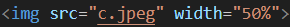

이미지는
짠! 이렇게 넣을 수 있어
이미지를 넣기 위해서는 일단 먼저 이미지를 다운 받아야 겠지?
넣고 싶은 이미지를 너희가 만든 html을 저장한 파일에 저장해야 돼
저장했으면 이미지를 넣기 위한 코드를 써야 돼

사진처럼 쓰고
scr="여기에 넣고 싶은 사진을 파일의 제목을 쓰면 돼"
나는 사진을
c.jpeg로 저장해서 이렇게 적었어
그 다음에 있는
width는 사진의 크기를 정할 수 있어
여기서 쓰인 사진은 50%의
크기로 넣었어
50%의 크기는 사이트의 크기에 따라 사진의 크기를 50% 정도로
설정하는 거야
어때 사진까지 넣으니까 너만의 사이트가 좀 꾸며진 것 같지?
SSWC HOME으로 돌아가기